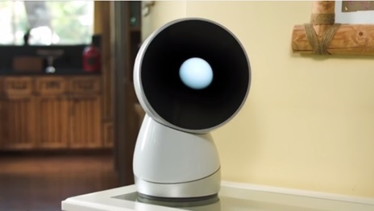
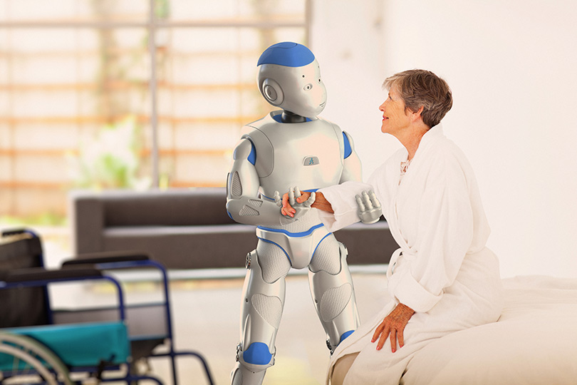

Disney doesn't always make a robot movie, but when it does, it creates a new yardstick for scientific research altogether.
Big Hero 6 - Disney (2014)

This post is not a run-of-the-mill regular weekly thing I do. I happened to stumble over Big Hero 6, a movie based on an adolescent roboticist's life (enough to get me hooked). They say serendipity is a good thing. And they couldn't be more right. What are the odds of bumping into a life-changing movie after watching Apple's latest keynote presentation of the new MacBook (tactile trackpad) and the new medical research platform -
.
The things I love about Big Hero 6
1. Inspired from Robotics research, not the other way round
The film's producers trailed a non-existent path by learning from the research on Human-Robot interaction and Soft Robotics at Robotics Institute, Carnegie Mellon University.
2. Bot-fighting
Real Steel is passe now. 'Big Hero 6' starts with underground bot-fights in a conceptualized fusion town - San Fransokyo. And who wins the bot-fight. Not the strongest or goriest bot, but the agile bot with magnetic-bearing servos.
3. Puberty
Hiro Hamada - the protagonist wunderkind takes a sloppy decision multiple times, goes through mood-swings. He has the same tragic flaws that all of us can connect with. He almost loses his mind over making a career in the winning-money-comes-easy bot fights. This is when the role of his elder brother - Tadashi kicks in. And boy does his short-lived (no pun) role inspire all of us to push the boundaries of Robotics.
4. Parenting done right.
Hiro wouldn't be the prodigy he became if not for his brother Tadashi and Aunt Cass. The film dabbles with scolding, concern, care, love, help, unconditional support. The elder brother is a parent to him - guiding Hiro on the right path whenver he goes wayward....till the very end. Tadashi doesn't die. Tadashi is here. - says Baymax multiple times in the movie. And till the end, Tadashi lives through Baymax and Hiro.
5. Robotics is hard, and rewarding
"I would lose my mind if I don't apply here" - says Hiro when Tadashi gives him a trip of his university lab. Flying cats, Industrial Manipulators playing Table Tennis, Electro-magnetic suspension on bike wheels, Laser-induced plasma, 3-d printed carbon fibre armours, Body-tracking, Chemical Metal embrittlement - this film inspired the maker in me. It beats even Iron Man after a point, which by the way is/was my guide to Robotics. And the magnum opus - Baymax - your personal health care assistant. He is the star of the film, through and through.
6. Soft Robotics
The film gets infinite brownie points for treading into the territory of Soft Actuated Robotics. The huggable inflatable Robot that can lift a 1000 pounds - that is what the future should be about - not metallic humanoids. This field of study is only beginning to emerge, and using a concept like Soft Robotics with the use case of a healthcare robot - the filmmakers have done a fascinating outstanding job.
7. The Maker spirit
The MIT Media Lab Design Innovation workshop changed the way I look at hacking. It is about identifying problems, storyboarding ideas, thinking of solutions, and implementing them as efficiently as possible. Hiro Hamada, the quintessential maker - sees a need, and fulfills it in his garage. I would definitely have a garage like that soon.
8. Swarm Robotics
The cuteness of the Soft Robot is challenged by grey goo - neurotransmitter controlled Microbots developed by Hiro for the Robotics exhibition. As Hiro comments - "The applications for this tech are limitless; the only limit is your imagination." He says it right. But a villainous imagination can only flip cars and kill people. And that's what happens. Hiro battles this evil with his friends and Baymax till the very end.
9. Robots treated as equals
The title of the movie is Big Hero 6 . This includes the 5 humans and Baymax, The film is a great step forward in Roboethics. Our programming prevents us from injuring a human being.
10. Expectations from a Health Care robot
"I fail to see how
makes me a better healthcare companion " . Baymax voices this concern multiple times with his intimidating upgrades. The movie follows the lines of Robot and Frank where a personal robot attendant understands the needs of its user - right or wrong. Baymax is reticent when it comes to following harm-causing orders. From this, we can learn that AI can be controlled, and need not result in singularity. Even if it does result, the robots would be intelligent enuough to keep the humans that are good at heart.
So here's to the robots of today and tomorrow - who can feel just like a human - social robotics and human-robot interaction are potential early adopters of the developments that sprout from this research.
Here are some Social Robots that might interest you:
Jibo - MIT Media Lab

Romeo - Aldebaran Robotics
